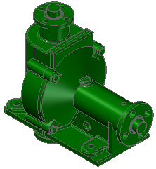
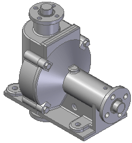
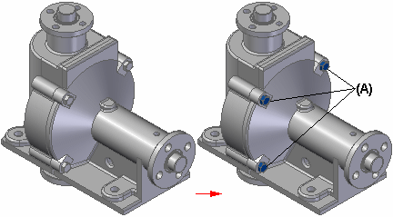
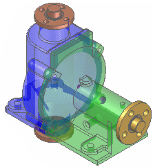

Create Simplified Assembly using the Visible Faces command
Creates a simplified representation of an assembly by processing the assembly to show only the exterior envelope of faces and by excluding parts, such as small parts. This improves interactive performance when you use the simplified representation of the assembly as a subassembly in another assembly or to create a drawing of a large assembly.

Processing the components
When you click the Create Simplified Assembly command, the assembly display is changed to the Unprocessed Color.

You can use the Simplified Assembly Options dialog box to set the colors you want to use for the Unprocessed color, Excluded Parts color, Exterior Faces color, and the Interior Faces color. These color settings allow you to visualize how the final simplified assembly representation will be displayed.
The Analyze Assembly Step determines which faces define the exterior envelope of the assembly. When you click the Process button, a proprietary algorithm analyzes each face in the assembly to determine if it is exposed, partially exposed, or completely hidden by other faces.
If an exterior face is partially exposed, the entire face remains displayed. This allows you to access the face for down stream operations, such as positioning the simplified version of the assembly in a higher level assembly.
When processing is complete, the exterior faces are displayed using the Exterior Faces color.

The command then proceeds to the Modify Results Step.
Modifying the output
The Modify Results Step allows you to exclude parts and reprocess any exterior faces that have been marked as interior faces incorrectly.
Excluding Parts
You can exclude parts by selecting them individually or by defining a part exclusion percentage using the Exclude Parts field on the command bar. The smallest size part in the current view is 1 and the largest is 100. You can enter a size value in the field or use the left and right arrows to add or remove the next size of parts from the exclusion set based on their size.
When you select parts by either method, they are displayed using the Excluded Parts color (A) to indicate they will not be displayed in the simplified representation. If you want to redisplay an excluded part, you can hold the CTRL key and select it again.

Reprocessing exterior faces
In some cases, an exterior face you want to include in the simplified representation is incorrectly marked as an interior face. This can occur when a large assembly component obstructs an exterior face on another component.
Before finishing the command, you can use view rotation commands, such as the Rotate command, to rotate the view to ensure that the output is correct. If you see any faces displayed using the interior face color, close the Rotate command, then click the Mark Faces as Exterior button on the command bar to reprocess the results. This should change the face color to the exterior color.
When the results meet your requirements, click the Preview and Finish buttons. When you finish the command, the exterior faces are redisplayed using the original face styles applied to the parts in the assembly. All interior faces and any parts you excluded are not displayed.

An entry is added to PathFinder to indicate that a simplified representation of the assembly exists. When you use the simplified representation of an assembly in another assembly, a special symbol is used in PathFinder to indicate that the simplified representation is displayed.
Copying bodies to the simplified model
The general purpose of creating simplified assemblies using the Visible Faces command is to create a lightweight representation of the assembly for display. But some downstream operations are not well supported by a simplified assembly containing only surface data. For these cases, you may choose to edit the simplified model and set the Copy Bodies option to save the bodies containing the faces to the simplified model.
Simplified representation data storage
When you create a simplified representation of an assembly, the data storage requirements for the assembly document increase because the surface data for the simplified representation is stored in the assembly document.
For more information on working with simplified assemblies in Solid Edge, see the Simplifying assemblies and Simplified assemblies best practices Help topics.
-
You cannot create a simplified assembly representation of an alternate assembly.
-
If you have already created a simplified assembly representation, then try to convert the assembly to an alternate assembly, a message is displayed to warn you that the simplified representation will be deleted.
How do I
Edit an Auto-Simplify definitionCreate a single body using Auto-Simplify
Use the simplified version of a part in an assembly
Use the designed version of a part in an assembly
Create a simplified version of an assembly
Save a simplified assembly as a part
Controlling simplified assemblies
Learn more
Simplifying partsSimplifying assemblies
Simplified assemblies best practices
Look up more details
Auto-Simplify commandAuto-Simplify command bar
Create Simplified Assembly using the Model command
Enclosure command
Duplicate Body command
Simplify Assembly command
Save Simplified As command
Use Simplified Parts command
Use Simplified Assemblies command
Simplify Model command
Update Simplified Assembly command
Save Simplified Assembly As dialog box
Simplified Assembly Visible Faces Options dialog box
Design Assembly command
Use Designed Assembly command
Use Designed Part command
Design Model command
Create Simplified Assembly Visible Faces command bar
Create Simplified Assembly Model command bar